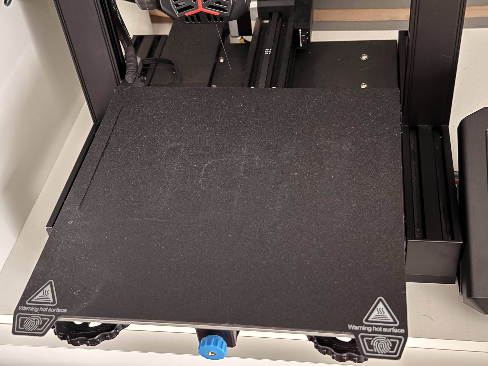
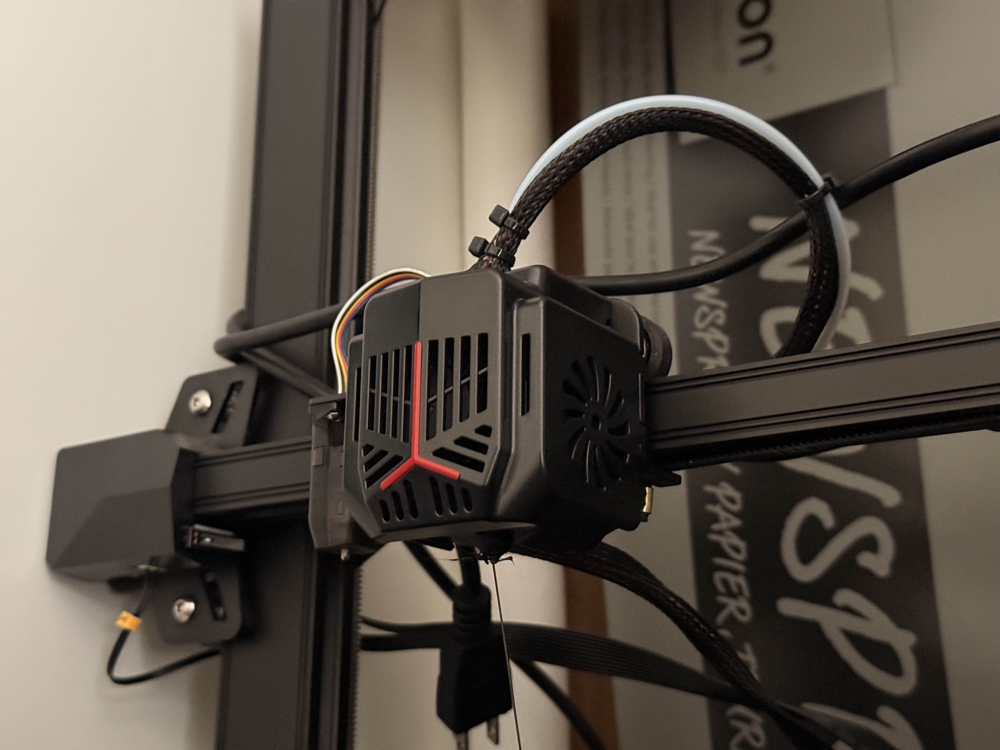

Custom-Built & Modified 3D Printer
Mechanical, thermal, and process optimizations to improve print quality, reliability, and development speed
Overview & Motivation
3D printers are powerful tools because they allow anyone to create unique, custom parts on demand. However, they also come with major limitations: long print times, inconsistent quality, and reliability issues when trying to iterate quickly on a design.
I modified my printer to directly address these issues, focusing on reducing warping, improving surface quality, shortening iteration time, and increasing overall reliability during long multi-day prints.

Solving Print Warping
One of the biggest issues I encountered was warping at the bottom of prints. This is caused by thermal stress from the heated build plate, which is needed for adhesion but can distort parts as they cool unevenly.
I evaluated two approaches:
- Using supports, which increased print time and material usage
- Reducing build plate temperature while improving surface adhesion
I chose the second approach to maintain fast iteration speeds without sacrificing part quality or requiring post-processing cleanup.

Build Plate Upgrade
I replaced the original glass build plate with a fiberglass plate. The rougher surface allows filament to mechanically grip into microscopic crevices, dramatically improving adhesion at lower temperatures.
This change eliminated the need for glue or adhesive sprays, reduced warping, and made part removal easier by allowing the plate to flex slightly instead of prying prints off a rigid glass surface.
Interchangeable Nozzle System
The nozzle plays a critical role in print quality and speed. Smaller nozzles produce finer detail but dramatically increase print time, while larger nozzles allow faster prints at the cost of resolution.
I modified the printer to support interchangeable nozzles, allowing me to choose the optimal nozzle size depending on the application:
- Thin nozzles for high-precision structural or cosmetic parts
- Larger nozzles for rapid prototyping and functional components

Thermal Calibration & Material Testing
I performed extensive testing with nozzle temperature to balance print quality, strength, and reliability across different filament batches.
Through systematic experimentation, I found 210°C to be the optimal printing temperature for standard PLA:
- Lower temperatures caused under-extrusion and weak layer bonding
- Higher temperatures caused stringing and overly glossy surface finish
This tuning significantly improved surface finish consistency and reduced failed prints, cutting wasted filament and iteration time.
Reliability & Print Monitoring
To improve reliability during long prints, I implemented remote monitoring that allows me to check print progress from my computer without being physically present.
I also configured automatic power-loss recovery, allowing the printer to pause a build if power is interrupted and resume from the exact point where it stopped once power is restored — preventing multi-day prints from being lost due to brief outages.
Results
- 80% improvement in print quality and efficiency
- Significantly reduced warping without requiring supports
- Improved surface finish and dimensional accuracy
- Faster iteration through nozzle and thermal optimization
- Higher success rate on long multi-day prints
What I’d Improve Next
- Enclosed thermal chamber for printing advanced materials (ABS, ASA, PA)
- Automated bed leveling with proximity sensor feedback
- Material-specific profiles for consistent results across filament types
- Real-time failure detection using computer vision